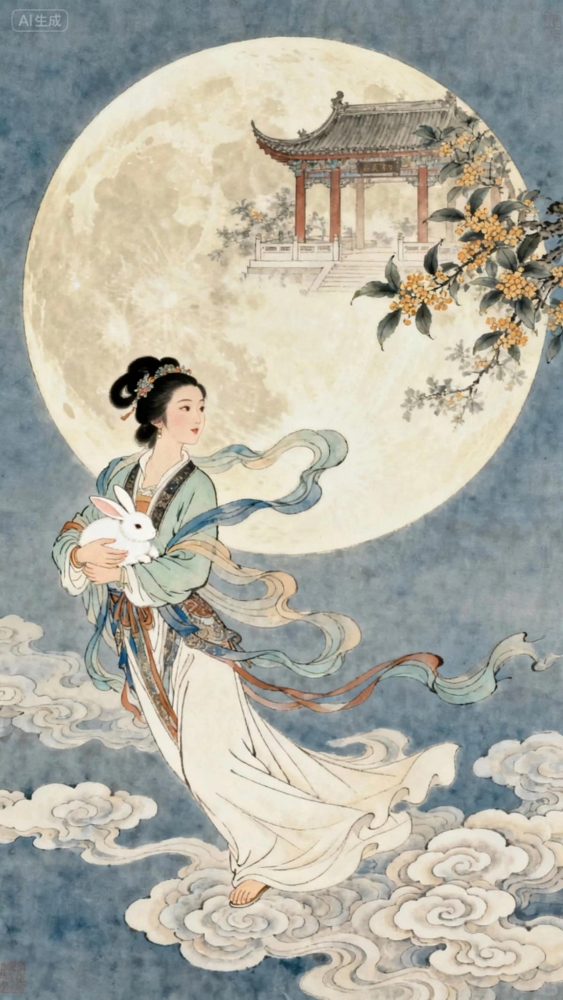

《歸藏》：「昔常娥以西王母不死之葯服之，遂奔月，爲月精。」
《歸藏》：「昔者羿善射，畢十日，果畢之。」
《歸藏》如今已缺失不全，但當中有兩條完全不相干的紀載。其中的「常娥奔月」就是嫦娥偷了西王母的仙藥，吃下去之後就飛上月亮；其中的「羿斃十日」寫的是后羿善射，想射下十個太陽就真的做到了。由上述可見這兩者是完全分開的劇情。西漢《淮南子》:「譬若羿請不死之藥於西王母，姮娥竊以奔月」，這是嫦娥首次偷了羿的藥，但句中並沒有提到他們的關係，一直到魏晉的《搜神記》都是類似的紀載。東漢張衡寫《靈憲》時，已稱「嫦娥，羿妻也」，這是文獻中首次確定二人的夫妻關係。
後世文人的那些嫦娥詩
六朝宋顏延之《為織女贈牽牛》云：「婺女儷經星，姮娥棲飛月；漸無二嬡靈，托身待天闕」
唐朝李白:整合月與嫦娥的典型範例〈把酒問月〉青天有月來幾時，我今停杯一問之。人攀明月不可得，月行卻與人相隨。皎如飛鏡臨丹闕，綠煙滅盡清輝髮。但見宵從海上來，寧知曉向雲間沒。白兔搗藥秋復春，嫦娥孤棲與誰鄰。今人不見古時月，今月曾經照古人。古人今人若流水，共看明月皆如此。唯願當歌對酒時，月光長照金樽裏。
